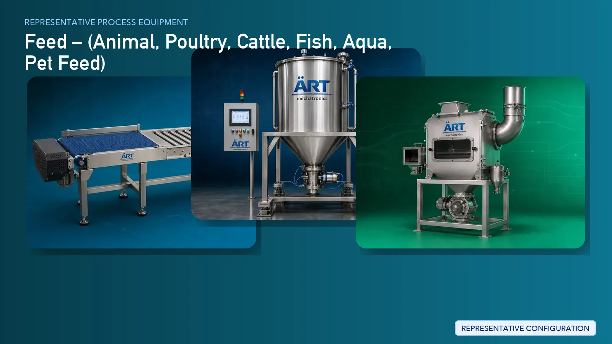

Animal Feed Manufacturing Plant & Machinery Solutions (Poultry, Cattle & Aqua Feed)
Animal feed manufacturing is a large-scale industrial process that involves precise formulation, grinding, mixing, pelletizing, and conditioning to produce nutritionally balanced feed for livestock and aquaculture. Consistency, hygiene, and production efficiency are critical for ensuring high-quality feed output.

About Feed processing
ART Mechatronics provides complete turnkey solutions for animal feed manufacturing plants, offering advanced systems for grinding, mixing, pelletizing, cooling, and packaging. Our solutions are engineered for high-capacity production, uniform feed quality, and efficient plant operation, making them ideal for global feed manufacturers.
Complete Animal Feed Process Flow
Raw materials such as grains, oil cakes, additives, vitamins, and minerals are received and stored.
Ensures efficient bulk material handling.
Raw materials are cleaned to remove impurities like dust, stones, and metal particles.
Protects downstream equipment and ensures product purity.
Raw materials are ground into fine particles for uniform mixing.
Ensures:
- Proper particle size
- Improved digestibility
- Uniform mixing
Ingredients are measured in precise quantities based on feed formulation.
Ensures accurate nutritional composition.
All ingredients are blended to create a homogeneous feed mixture.
Ensures consistent nutrient distribution.
The feed mixture is conditioned using steam or moisture before pelletizing.
Improves pellet quality and digestibility.
The feed is formed into pellets or granules.
Ensures:
- Uniform size
- Better handling
- Reduced wastage
Pellets are cooled to stabilize moisture and improve durability.
Pellets may be broken into smaller sizes for specific applications.
Feed is screened to remove fines and ensure uniform size.
Fine dust generated during processing is controlled. Systems Used:
Ensures clean and safe working environment.
Finished feed is packed into bags or bulk containers.
Suitable for bulk and retail supply.
Machinery Required for Animal Feed Plant
- Material Handling Systems
- Storage Silos
- Pre Cleaner
- Destoner
- Magnetic Separator
- Hammer Mill / Grinder
- Batching & Dosing System
- Ribbon Blender / Paddle Mixer
- Conditioner
- Pellet Mill
- Pellet Cooler
- Crumbler
- Vibro Sifter
- Dust Collection System
- Bag Filling Machines
Turnkey Animal Feed Plant Solutions
ART Mechatronics offers complete turnkey solutions for feed manufacturing plants, including:
- Process design & plant layout
- Grinding and mixing systems
- Pelletizing and conditioning systems
- Dust control & air handling systems
- Automation & control panels
- Installation & commissioning
- After-sales support
We customize solutions based on:
- Feed type (poultry / cattle / aqua)
- Production capacity
- Pellet size and formulation
- Automation level
Why Choose Art Mechatronics
- Expertise in bulk material and feed processing systems
- Advanced pelletizing and conditioning technology
- High-capacity plant design
- Reliable dust control systems
- Heavy-duty industrial machinery
- Global export capability
Machinery in a Feed plant
Where it's used
Get pricing & specs for the Feed plant
Share the product, target capacity, current process and plant location. These details help our engineers discuss the right machine or line configuration.
One partner, from design to start-up
ART Mechatronics designs, manufactures, installs and commissions your Feed solution with regional presence in India, UAE and Thailand.